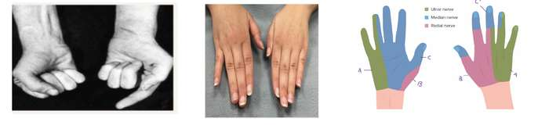
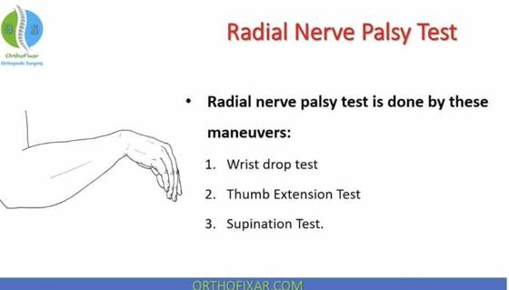
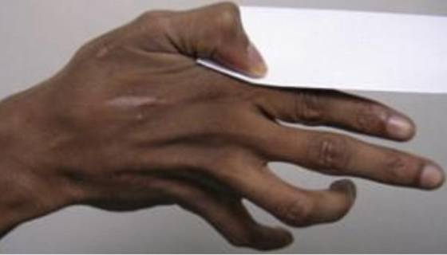
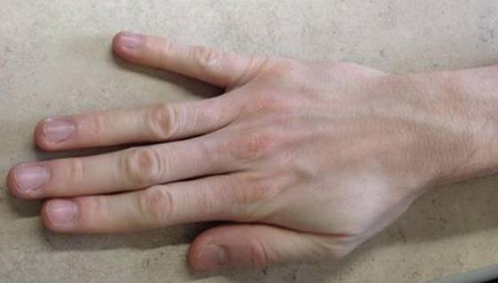
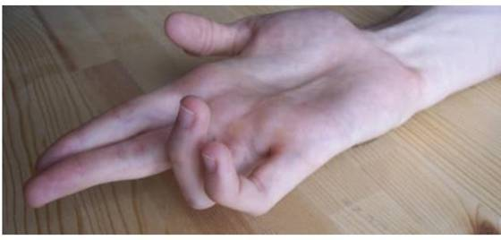
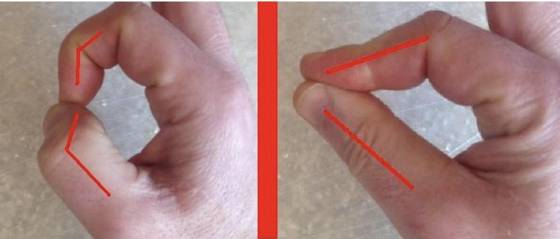

MCQSpecific sign for anterior interosseous nerve syndrome?
✓ Correct · صحيح
Answer · الجواب: OK sign (cannot form a circle between thumb and index, flat pinch) in Anterior Interosseous Nerve (AIN) syndrome.
علامة OK (لا يستطيع عمل دائرة بالإبهام والسبابة وتصبح القرصة مسطحة) في متلازمة العصب بين العظمي الأمامي.
Why · السبب: If the question has "anterior interosseous nerve" -> OK sign: cannot make a circle (flat pinch).
إذا لقيت "anterior interosseous nerve" -> OK sign: ما يقدر يسوي دائرة (pinch مسطح).
Source · المصدر: Project: Ortho Mid Missing Topics (SEMI 2), L15 Pediatric Fractures 1 lecture (AIN neurapraxia in supracondylar fracture)
Your file · ملفك: OK sign 79993bc4-Note_27_Oct_2026 p8 (Q16) and p10 (Q5) ✓ confirmed
OSPE / OSCEStation: hand pictures (two clinical photos of hands showing a deformity/sign) plus a labelled hand sensory map (A, B, C over ulnar/median/radial territories): name the sign, which nerve is affected, and name areas A, B, C.
? Not verified · غير مؤكد
Answer · الجواب: From the picture: A = ulnar nerve area (little finger and ulnar half of ring), B = radial nerve area (radial dorsum/first web space), C = median nerve area (thumb, index, middle fingers). First photo = Benediction sign (median nerve, pointing index when making a fist), the second photo (hands flat) is probably Wartenberg sign (ulnar nerve), unconfirmed.
من الصورة: A = منطقة العصب الزندي (الخنصر ونصف البنصر)، B = منطقة العصب الكعبري (الجهة الكعبرية الظهرية والحيّز الأول)، C = منطقة العصب الناصف (الإبهام والسبابة والوسطى). الصورة الأولى = علامة البركة (الناصف: السبابة تبقى ممدودة عند محاولة القبض)، والصورة الثانية غالبًا علامة وارتنبرغ (الزندي) وغير مؤكدة.
Why · السبب: If the question has "hand pictures" + "sensory map" -> Benediction sign (median), Wartenberg (ulnar), map: A ulnar, B radial, C median.
إذا لقيت "hand pictures" + "sensory map" -> Benediction (median)، Wartenberg (ulnar)، الخريطة: A ulnar و B radial و C median.
Source · المصدر: Project: FINAL_ORTHO_OSCE_2024.pdf, station 3 pictures (viewed), Ortho Mid Missing Topics (SEMI 2)
Your file · ملفك: no key in file e7058528 FINAL_ORTHO_OSCE_2024 p1 station 3 no key in file

OSPE / OSCEStation photo (wrist with the hand hanging down): name the sign and the nerve involved.Asked in 3+ exams
✓ Correct · صحيح
Answer · الجواب: Wrist drop, the radial nerve (radial nerve palsy, e.g. with a humeral shaft fracture).
سقوط الرسغ (Wrist drop), العصب الكعبري (شلل الكعبري، مثلاً مع كسر جسم العضد).
Why · السبب: If the question has "hand hanging down" -> wrist drop, radial nerve (humeral shaft fracture).
إذا لقيت "hand hanging down" -> wrist drop، radial nerve (كسر humeral shaft).
Source · المصدر: Project: Ortho Mid Missing Topics CD 1 CD 3 SEMI 2 (Seminar 2 summary, p10-12)
Your file · ملفك: Drop wrist, radial nerve (tests: wrist drop, thumb extension, supination) Added from file check · Ortho_OSPE_ p10, Ortho_OSPE__1 p10, Note 4 p6, Note 7 p4, Final OSCE 2024 ✓ confirmed

OSPE / OSCEStation photo (paper held between thumb and index, thumb bends): name the sign, the nerve and the weak muscle.Asked in 3+ exams
✓ Correct · صحيح
Answer · الجواب: Froment's sign, the ulnar nerve, the adductor pollicis (the median-supplied FPL bends the thumb instead).
علامة فرومنت (Froment), العصب الزندي، العضلة المقرّبة للإبهام (Adductor pollicis)، وينحني الإبهام بـ FPL من الناصف.
Why · السبب: If the question has "paper held" + "thumb bends" -> Froment's sign, ulnar nerve, weak adductor pollicis.
إذا لقيت "paper held" + "thumb bends" -> Froment's sign، ulnar nerve، ضعف adductor pollicis.
Source · المصدر: Project: Ortho Mid Missing Topics CD 1 CD 3 SEMI 2 (Seminar 2 summary, p10-12)
Your file · ملفك: Froment's sign, ulnar nerve (C8-T1), adductor pollicis and first dorsal interosseous Added from file check · Ortho_OSPE_ p12, p14, Note 4 p3, Note 5 p5, Note 7 p4 ✓ confirmed

OSPE / OSCEStation photo (little finger stays away from the ring finger): name the sign, the nerve and the weak muscle.Asked in 3+ exams
✓ Correct · صحيح
Answer · الجواب: Wartenberg's sign, the ulnar nerve (C8-T1), the weak third palmar interosseous (the abductor digiti minimi pulls the little finger away).
علامة وارتنبرغ، العصب الزندي (C8-T1), ضعف العضلة بين العظمية الراحية الثالثة (وتبعد المبعِّدة للخنصر ADM الخنصر).
Why · السبب: If the question has "paper held" + "thumb bends" -> Froment's sign, ulnar nerve, weak adductor pollicis.
إذا لقيت "paper held" + "thumb bends" -> Froment's sign، ulnar nerve، ضعف adductor pollicis.
Source · المصدر: Project: Ortho Mid Missing Topics CD 1 CD 3 SEMI 2 (Seminar 2 summary, p10-12)
Your file · ملفك: Wartenberg's sign, ulnar nerve (C8-T1), third palmar interosseous, abductor digiti minimi Added from file check · Ortho_OSPE_ p14, Ortho_OSPE__1 p14, Final OSCE 2024, Mid_ortho p10 ✓ confirmed

OSPE / OSCEStation photo (ring and little fingers hyperextended at the knuckles, bent at the finger joints): name the deformity and the nerve.Asked in 3+ exams
✓ Correct · صحيح
Answer · الجواب: Claw hand, the ulnar nerve.
اليد المخلبية (Claw hand), العصب الزندي.
Why · السبب: If the question has "hyperextended" + "ring and little fingers" -> claw hand, ulnar nerve.
إذا لقيت "hyperextended" + "ring and little fingers" -> claw hand، ulnar nerve.
Source · المصدر: Project: Ortho Mid Missing Topics CD 1 CD 3 SEMI 2 (Seminar 2 summary, p10-12)
Your file · ملفك: Claw hand, ulnar nerve Added from file check · Ortho_OSPE_ p15, Ortho_OSPE__1 p15, Note 4 p4, Final OSCE 2024 ✓ confirmed

OSPE / OSCEStation photo (circle made with thumb and index): name the sign, the nerve, and the fracture that causes it.
✓ Correct · صحيح
Answer · الجواب: OK sign (cannot make a circle, flat pinch), the anterior interosseous nerve, supracondylar fracture of the humerus (in children).
علامة OK (لا يقدر على عمل دائرة، قرصة مسطحة), العصب بين العظمي الأمامي، كسر فوق اللقمتين بالعضد (عند الأطفال).
Why · السبب: If the question has "paper held" + "thumb bends" -> Froment's sign, ulnar nerve, weak adductor pollicis.
إذا لقيت "paper held" + "thumb bends" -> Froment's sign، ulnar nerve، ضعف adductor pollicis.
Source · المصدر: Project: Ortho Mid Missing Topics CD 1 CD 3 SEMI 2 (Seminar 2 summary, p10-12)
Your file · ملفك: OK sign, anterior interosseous nerve, supracondylar fracture Added from file check · Ortho_OSPE_ p10, p15, Ortho_OSPE__1 p15 ✓ confirmed
